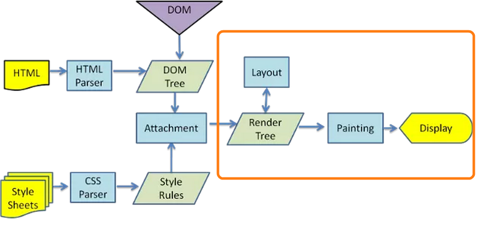
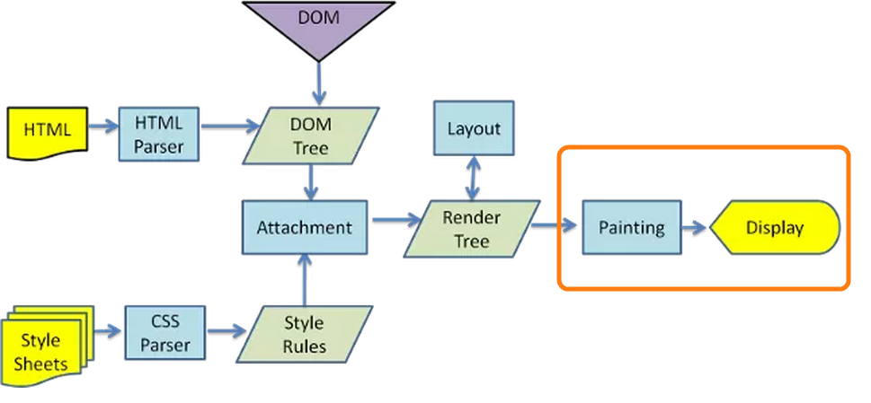
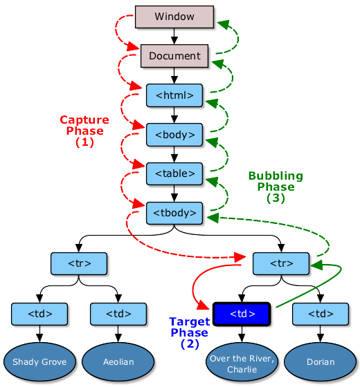

May 29, 2014
$(document).ready?Question: Is there any difference between window and document?
Answer: Yes. JavaScript has a global object and everything runs under it. window is that global object that holds global variables, global functions, location, history everything is under it. Besides, setTimeout, ajax call (XMLHttpRequest), console or localStorage are part of window.
document is also under window. document is a property of the window object. document represents the DOM and DOM is the object oriented representation of the html markup you have written. All the nodes are part of document. Hence you can use getElementById or addEventListener on document. These methods are not present in the window object.
window.document === document; //true
window.getElementById; //undefined
document.getElementById; //function getElementById() { [native code] }
ref: document and window
Question: Does document.onload and window.onload fire at the same time?
Answer: window.onload is fired when DOM is ready and all the contents including images, css, scripts, sub-frames, etc. finished loaded. This means everything is loaded.
document.onload is fired when DOM (DOM tree built from markup code within the document)is ready which can be prior to images and other external content is loaded.
Think about the differences between window and document, this would be easier for you.
Bonus:document.readyState Returns "loading" while the Document is loading, "interactive" once it is finished parsing but still loading sub-resources, and "complete" once it has loaded. The readystatechange event fires on the Document object when this value changes.
ref: MDN: readyState
Question: Is attribute similar to property?
Answer: attributes are just like attribute in your html tag (XML style attribute) inside the starting tag. html attributes are exposed to the DOM via property. Hence, a property is created when DOM is parsed for each attribute in the html tag. If you change an attribute only the value of the property will change. However, the value of attribute will remain same.
For example, if you have a input with three attribute- id, type, value.
<input id="my-input" type="text" value="Name:">
If you type "my dude" in the text box. The value property will be changed but value attribute will remain unchanged.
var myInput = document.getElementById('my-input');
myInput.getAttribute('value'); //"Name:"
myInput.value; //'my dude'
However, if you change the value of an attribute by using myInput.setAttribute('value', 'that dude') or myInput.removeAttribute(), then value of attribute will be changed.
ref: attr vs property
Question: What are the different ways to get an element from DOM?
Answer: You can use the following methods in document
getElementById to get a element that has the provided Id.getElementsByClassName to get a nodelist (nodelist is not an array, rather it is array-like object) by providing a class name.getElementsByTagName to get a nodelist by the provided tag name.querySelector you will pass css style selector (jquery style) and this will retrurn first matched element in the DOM.querySelectorAll will return a non-live nodelist by using depth-first pre order traversal of all the matched elements. Non-live means, any changes after selecting the elements will not be reflected.There are two more options but I dont use them frequently-
getElementsByName returns the list of elements by the provided name of the html taggetElementsByTagNameNS returns elements with particular tag name within the provided namespaceQuestion: What is the fastest way to select elements by using css selectors?
Answer: It depends on what you are selecting. If you have an ID of an element getElmentById is the fastest way to select an element. However, you should not have so many ID in you document to avoid style repetition. css class getElementsByClassName is the second quickest way to select an element
Here is the list. As we go downwards through the list, it takes more time to select elements.
If you have crazy long selectors to select element, think about your selectors and check whether you can use a class instead.
Question: Why querySelectorAll('.my-class') is slower than getElementsByClassName('my-class')?
Answer: querySlectorAll is a generic purpose method. It is optimized for different kinds of selectors. Hence it has to check whether you put a "#" or "." in front of the parameter you are passing. If you are just passing a class name with ".", under the hood it uses getElementsByClassName (could vary based on browser implements). Whereas if you directly uses getElementsByClassName it directly uses this method and doesn't have to go through all the initial processing of querySelectorAll. Hence to search elements with a particular class name, getElementsByClassName is faster than querySelectorAll.
Question: How come, I can't use forEach or similar array methods on a NodeList?
Answer: Yeah. Both array and nodeList have length and you can loop through elements but they are not same object.
Both are inherited from Object. However array has different prototype object than nodeList. forEach, map, etc are on array.prototype which doesn't exist in the NodeList.prototype object. Hence, you don't have forEach on a nodeList
myArray --> Array.prototype --> Object.prototype --> null
myNodeList --> NodeList.prototype --> Object.prototype --> null
Question: How could you solve this problem?
Answer: To solve this problem, you can simply loop through a nodeList and do whatever you wanted to inside forEach or you can call method on array to convert nodelist to an array. After that you will have access to all array.prototype methods
var myNodeList = document.querySelectorAll('.my-class');
var nodesArray = Array.prototype.slice.call(myNodeList);
//use array method on nodeList
nodesArray.forEach(function(el, idx){
console.log(idx, el);
});
ref: MDN: nodelist
Question: If you need to implement getElementByAttribute, how would you implement it?
Answer: First, get all the elements in the DOM. You can either get it by Tag Name '*' and then check whether they have the particular attribute. In this case, even if attribute is null that will be captured. If you need to check the value, you should be able to do it by passing one extra parameter and comparing it in the if block.
function getElementsByAttribute(attribute){
var allElements = document.getElementsByTagName('*'),
elm,
found=[];
for (var i = 0; i < allElements.length; i++)
{
elm = allElements[i];
if (elm.getAttribute(attribute))
{
found.push(elm);
}
}
return found;
}
Question: Can you make it better?
Answer: Yes. The example above, I am getting all the elements and then comparing the attribute. I can check the attribute while getting the elements.
// todo: prettify this ugly code
function getElementsByAttribute2(attr){
var found = [],
child;
function getNodeText(node){
if(node && node.childNodes && node.childNodes.length){
for(var i = 0, len = node.childNodes.length; i<len; i++){
child = node.childNodes[i];
if(child && child.getAttribute && child.getAttribute(attr)){
found.push(child);
}
getNodeText(child);
}
}
else{
if(node.getAttribute && node.getAttribute(attr)){
found.push(node);
}
}
}
getNodeText(document.body);
return found;
}
If you want to make it even faster, you could try DOM traverse by using TreeWalker, NodeIterator, NodeFilter or find them in spec . Unfortunately, I have no idea what I am talking about.
Question: Can I add this getElementsByAttribute to document?
Answer: Mr. Interviewer, please read this article: whats wrong with extending the dom
Question: How would you add a class to an element by query selector?
Answer: Very simple. Just get the element and add the classname to the classlist.
function addClass(selector, className){
var elm = document.querySelector(selector);
if (elm){
elm.classList.add(className);
}
}
Similarly, you can implement removeClass, toggleClass and hasClass
//IE9+
el.classList.remove('my-class'); //removing a class
el.classList.toggle('my-class'); // toggling a class
el.classList.contains('my-class'); // checking whether class exists
Question: How could I verify whether one element is child of another?
Answer: First check whether the passed parent is the direct parent of the child. If not, keep moving upward to the root of the tree.
function isDescendant(parent, child){
while(child.parentNode ){
if(child.parentNode == parent)
return true;
else
child = child.parentNode;
}
return false;
}
Question: What is the best way to create a DOM element? Set innherHTML or use createElement?
Answer: When you set innerHTML property, browser removes all the current children of the elements. Parse the string and assign the parsed string to the element as children.
For example, if you want to add a list item to an unorderedList. You can get the element and set the innerHTML of the element like
var ul = document.getElementById('myList');
el.innerHTML = '<li>Only one item</li>';
Extra Credit: innerHTML could be slow while parsing a string. Browser has to deal with the string and if you have crappy html (invalid html).
On the other hand, while using appendChild, you create a new Element. Since you are creating it, browser doesnt have to parse string and there is no invalid html. And you can pass the child to the parent and child will be appended to the parent.
var li = document.createElement("li");
var text = document.createTextNode('Only one Item');
li.appendChild(text);
ul.appendChild(li);
Extra Credit: If you pass a reference to be appended as child other than creating a new element. The reference you are passing will be removed from the current parent and will be added to the new parent you are appending to.
Though you would be writing couple more lines of JavaScript, it makes browsers life easier and your page faster.
Question: What is createDocumentFragment and why you might use it?
Answer: documentFragment a very lightweight or minimal part of a DOM or a subtree of a DOM tree. It is very helpful when you are manipulating a part of DOM for multiple times. It becomes expensive to hit a certain portion of DOM for hundreds time. You might cause reflow for hundred times. Stay tuned for reflow.
If you are changing dom that cause expensive reflow, you can avoid it by using documentFragment as it is managed in the memory.
//bad practice. you are hitting the DOM every single time
var list = ['foo', 'bar', 'baz', ... ],
el, text;
for (var i = 0; i < list.length; i++) {
el = document.createElement('li');
text = document.createTextNode(list[i]);
el.appendChild(text);
document.body.appendChild(el);
}
//good practice. you causing reflow one time
var fragment = document.createDocumentFragment(),
list = ['foo', 'bar', 'baz', ...],
el, text;
for (var i = 0; i < list.length; i++) {
el = document.createElement('li');
text = document.createTextNode(list[i]);
el.appendChild(text);
fragment.appendChild(el);
}
document.body.appendChild(fragment);
ref: W3: spec
Question: What is reflow? What causes reflow? How could you reduce reflow?
Answer: Aha... so many questions at the same time. Take a breathe Mr. Interviewer.
reflow: When you change size or position of an element in the page, all the elements after it has to change their position according to the changes you made. For example, if you change height on an element, all the elements under it has to move down in the page to accomodate a change in height. Hence, flow of the elements in the page is changed and this is called reflow.
Why reflow is bad: Reflows could be very expensive and it might have a performance hit specially in the smaller devices like phone. As it might causes changes in the portion (or whole) layout of the page.
In the images below, effect of reflow is shown in a yellow box. Reflow causes changes in the render tree which changes the layout of the page. Eventually browser has to paint the changes so that you can see your awesome changes.
Image source: original image is taken from W3 site but I added the yellow box (my contribution).
Reasons to reflow: The following cases causes reflow
display: none;How to avoid: To avoid reflow, try to avoid doing things in the above list and some more in the below
Question: What is repaint and when does this happen?
Answer: repaint happens when you change the look of an element without changing the size and shape. This doesn't cause reflow as geometry of the element didn't changed.
How it happens:
In the image below, only the painting and display part is changes due to repaint. Browser doesn't have to change the render tree or layout of the page. Hence, this is less expensive than reflow.
image source: original image is taken from W3 site but i added the yellow box (my contribution).
If possible, prefer repaint over reflow.
Question: How could you make sure to run some javaScript when DOM is ready like $(document).ready?
Answer: There are four different ways-
option-1: Put your script in the last tag of html body element. DOM would be ready by the time browser hits the script tag.
option-2: Place your code inside a DOMContentLoaded handler. This event will be fired when DOM is completely loaded.
document.addEventListener('DOMContentLoaded', function(){
//put your script here
});
option-3: Watch changes in the readyState of the document. And the last state is "complete" state, you can put your code there.
document.onreadystatechange = function () {
if (document.readyState == "complete") {
//put your script here
}
}
option-4: Search jquery source code and copy dom ready function. In that case you have a ready function that works in the older browsers as well without loading the whole jquery library.
Question: What is event bubble? How does event flows?
Answer: To understand event bubble, you have to understand what happen when you click on anything on a page.
Where you clicked: If you have a table with multiple rows and multiple columns and you click in one of the cell
The way browser find out where you have clicked are as follows-
Stare at the image for 5 min. Have a look at the left hand side where red arrows starts that is phase 1. The capture phase goes downward and found the target. This is target phase (phase-2), blue color. After that the bubbling phase starts (phase-3) in green arrows. Bubble stage goes all the way up to the root (window).
Image source: event order and loop.
If you want to stop the bubbling you have to explicitly call stopPropagation or stopImmediatePropagation
Show live demo: Go to this link and click any layer to see event propagation.
Question: How would you destroy multiple list items with one click handler?
Easy Solution: If you have one hundred list items that have similar event to handle. You can write one hundred event handler (actually copy paste) same code in 99 places. This works but if something changes in the event handler, you have to change in one hundred places. This doesn't call job security. This is called screwed up.
Second problem is if you want to dynamically add a new element, you have to make sure event handler is attached with the new element. More JavaScript code!
Answer: We can actually leverage event bubbling. You can have only one event handler attached to the parent element of one hundred list items. In this case, you can attach the event handler to the "ul" tag. After you click on a list item (list item does not have an event), event will bubble and "ul" has a handler. That handler will be fired.
<ul id="listToDestroy">
<li><a href="#">first item</a></li>
<li><a href="#">second item</a></li>
<li><a href="#">third item</a></li>
<li><a href="#">forth item</a></li>
<li><a href="#">Fifth item</a></li>
</ul>
document.getElementById('listToDestroy').addEventListener('click', function (e) {
var elm = e.target.parentNode;
elm.parentNode.removeChild(elm);
e.preventDefault();
});
Question: Create a button that is destroyed by clicking on it but two new buttons are created in it's place.
Answer: One way of solving is to attach a event handler with the button to destroy itself and append two. However, we can leverage event delegate. If we attach the event hander to the parent div instead of the button itself. We don't have to add the event handler to each button we create. So, we will take advantage of event bubbling.
Try to be Smart: If both the newly created button is identical to one we are destroying, why interviewer wants to destroy exactly similar one and then create one. Why not just add one. And end result would be same, you will have two two buttons.
Interviewer: I just want to see whether you can destroy any element. Make sure when you are destroying, there is no reference to the element, otherwise, you will have memory leak. If interviewer, says ok, just create one more button on click, then use your brain to change the following code.
<div id="doubleHolder">
<button class="double">double</button>
</div>
document.getElementById('doubleHolder').addEventListener('click', function (e) {
if(e.target.classList.contains('double')){
var btn = document.createElement('button');
btn.setAttribute('class', 'double');
btn.innerHTML = 'double';
var btn2 = document.createElement('button');
btn2.setAttribute('class', 'double');
btn2.innerHTML = 'double';
this.appendChild(btn);
this.appendChild(btn2);
this.removeChild(e.target);
}
});
ref: destroy button
Question: If you are looping through a collection of dom and adding a click handler like the example below. What will happen if you click on the item?
<div class="item">Item1</div>
<div class="item">Item2</div>
<div class="item">Item3</div>
<div class="item">Item4</div>
var elems = document.getElementsByClassName("item"), i;
for (i = 0; elems.length > i; i++) {
elems[i].addEventListener("click", function () {
this.innerHTML = "Item" + i + " Clicked";
});
}
is that what you have expected?
how could you fix it?
Answer: there could be two different ways to solve it. first one is to execute it immediatey
explanation: as you are looping through a closure is created for the event handler. look i is encapsulated. Now, after loop is over, value of i = 4. and whenever you are clicking on the element it uses the value of i. which is currently 4. Hence doesnt matter which one you are clicking, you will see item4 clicked
var elems = document.getElementsByClassName("item"), i;
for (i = 0; elems.length > i; i++) {
var el= elems[i];
(function(elem, idx){
elem.addEventListener("click", function () {
elem.innerHTML = "Item" + idx + " Clicked";
});
})(el, i+1);
}
Solution: to solve this problem, you can use IIFe (immediate invoking functios expression) this will exectute the function immediately in the loop before going to the next step. Hence current value of i will be used. and in the next one the new value of i would be used.
Good job
question: how could you solve this by using event delegate
Answer: Use your brain to extract answer from this answer
Question: How could you capture all clicks in a page?
Answer: You can leverage, event bubble to capture all the clicks. As all the clicks will be bubbled up to the body.
document.querySelector('body').addEventListener('click', function(e){
console.log('body clicked', e.target);
});
//or
window.onclick =function(e){
console.log('someone clicked', e.target)
}
However, if event bubbling is canceled by stopPropagation() your code will not work. Think about it.
Question: How can you get all the texts in a web page?
Answer: The easiest way to get all the text is to get the innerText of body tag.
document.body.innerText;
Question: Can you do by accessing DOM?
Answer: Make it recursive. I used closure. There could be many other ways to implement.
function getAllText(node){
var allText = [];
function getNodeText(node){
if(node && node.childNodes && node.childNodes.length){
for(var i = 0, len = node.childNodes.length; i<len; i++){
getNodeText(node.childNodes[i]);
}
}
else{
allText.push(node.nodeValue);
}
}
getNodeText(node);
return allText.join('');
}
disclaimer: I didn't explicitly tested these two methods.
Question: What is defer and async keyword does in a script tag?
Answer: HTML parser will ignore defer and async keyword for inline script (script that does not have a src attribute).
normal: When you have a plain script tag (no defer or async keyword), parser will pause parsing, script would be downloaded and exectuted. After that parsing resume.
defer: defer keyword in the script tag will defer the execution of the script. Hence script will be executed when DOM is available. Important point is, defer is not supported by all major major browsers.
async: If possible, set the execution of the script, asynchronously. async keyword has no effect on inline script.
Image copied from JS script execution
Extra: async injected scripts script injected async scripts are considered harmful
Question: How could you prevent a click on an anchor from going to the link?
Answer: preventDefault() inside event handler. However, this doesnt stop further propagation.
Question: How could you stop further propagation of an event?
Answer: Call event.stopPropagation();
Question: Can you remove an event handler from an element?
Answer: Yes. target.removeEventListener('click', handler)
Question: How could you run event handler in the capturing phase not in bubble phase?
Answer: There is a third (optional) parameter in addEventListener and removeEventLister. You can pass true or false to useCapture phase.
Question: How could you prevent multiple event handler to be fired for an event?
Answer: If event listeners are attached for the same type event (click, keydown, etc.) of an element for the same event type, you can call event.stopImmediatePropagation() in the first event handler. No other event handler will be executed.
Question: What are the cancelable events?
Answer: Go to wiki find the right most column cancelable.
Question: How could I check whether an event is cancelable or not?
Answer: Use event.cancelable to get true or false return. However, you have to preventDefault() to prevent the event.
Question: Is there anything you have to be careful when using node.cloneNode()?
Answer: While cloning, make sure you didnt duplicate ID.
Question: What are different nodeTypes?
Answer: ELEMENT_NODE (1), TEXT_NODE (3), COMMENT_NODE(8), DOCUMENT_NODE(9), DOCUMENT_TYPE_NODE(10), DOCUMENT_FRAGMENT_NODE(11), etc.
Question: What are the differences between node and element?
Answer: read here.
Following are the questions that weren't picked in my final list.
JavaScript part -1: JS basic algorithm
HTML: html related questions
Full list of interview questions are https://github.com/khan4019/front-end-Interview-Questions
A lot of data structure, tree, graphs related interview questions are on the pipe line. Stay tuned
Feel free to express your anger (sorry folks, you have to use g+.). Also point out my mistakes ( technical, wrong answer, spelling, grammar, sentence..., whatever), let your dude learn and grow.